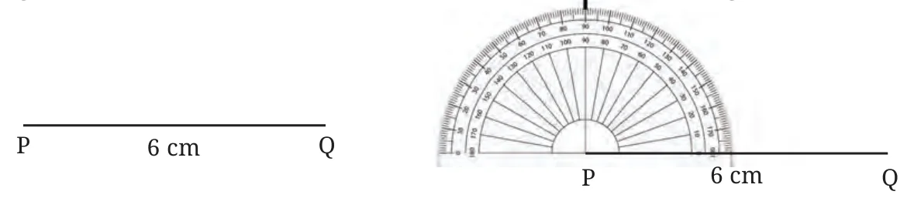
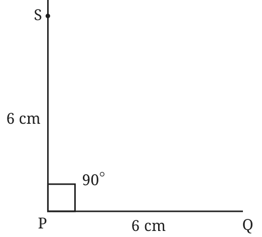
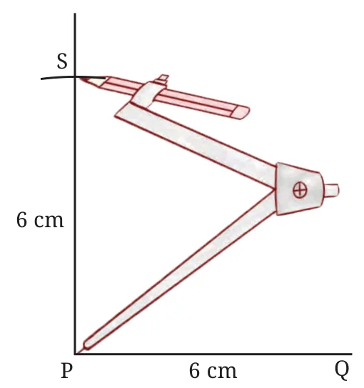
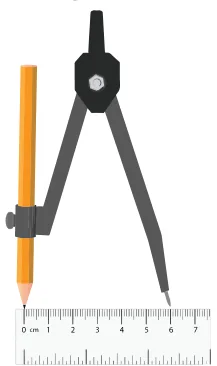
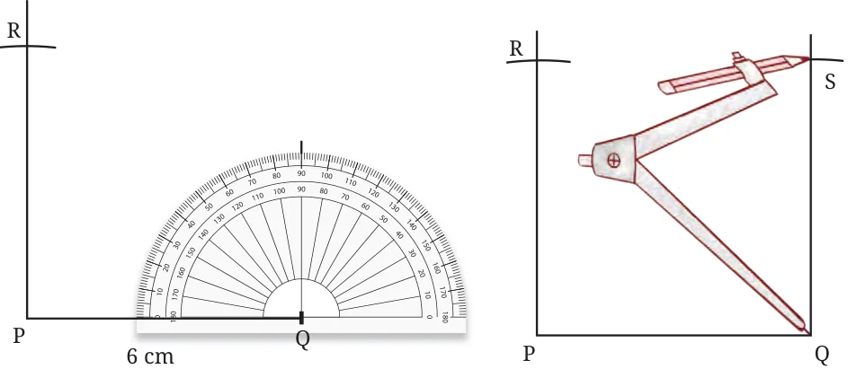
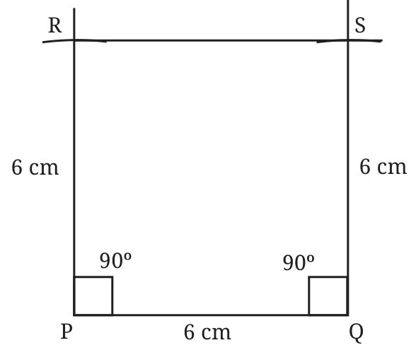

Now, let us start constructing squares and rectangles. How would you construct a square with a side of 6 cm?
For help, you can see the following figures. A square PQRS of side length 6 cm is constructed.
Step 1 Step 2

Mark a point to draw a perpendicular to PQ through P.
Step 3
Method 1

Mark S on the perpendicular such that \(PS = 6\) cm using a ruler.
Method 2
This can also be done using a compass.

Can you see why PS should be 6 cm long?

Step 4
Draw a perpendicular to line segment PQ through Q.
Step 5
If we had used the compass, then the next point can easily be marked using it!

Step 6

How long is the side RS and what are the measures of \(\angle R\) and \(\angle S\)?
Construct
- Draw a rectangle with sides of length 4 cm and 6 cm. After drawing, check if it satisfies both the rectangle properties.
- Draw a rectangle of sides 2 cm and 10 cm. After drawing, check if it satisfies both the rectangle properties.
- Is it possible to construct a 4-sided figure in which—
- all the angles are equal to \(90^{\circ}\) but
- opposite sides are not equal?